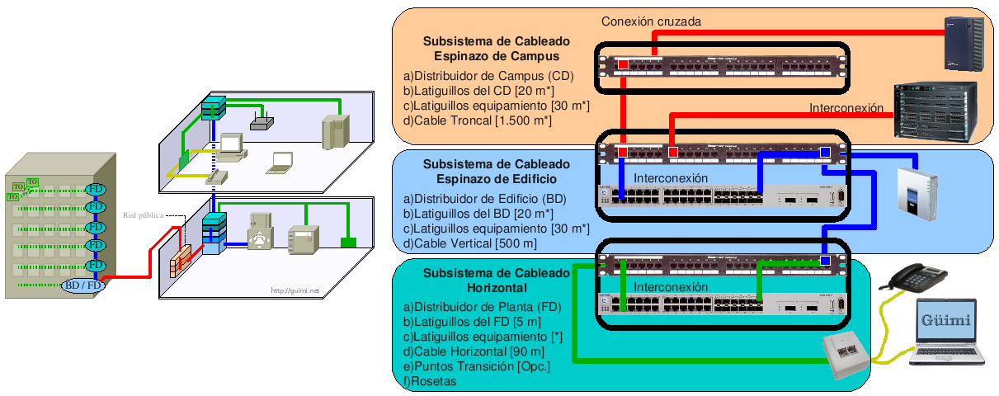
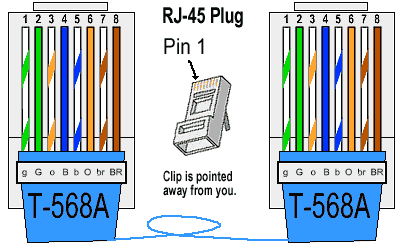
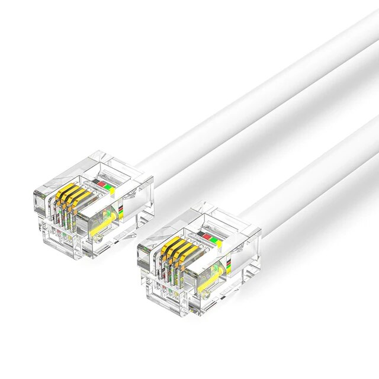
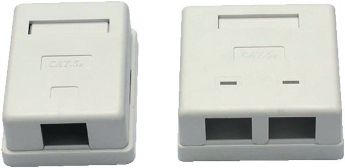
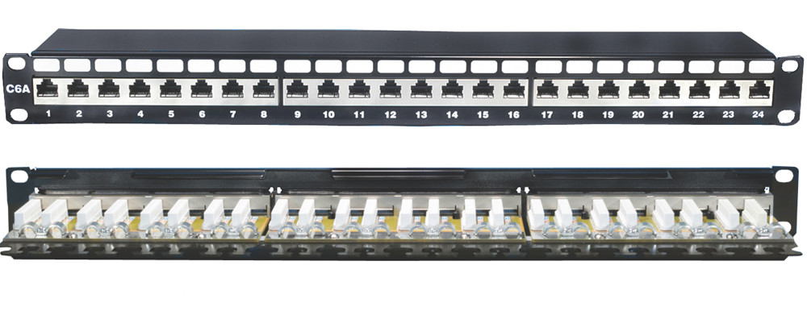
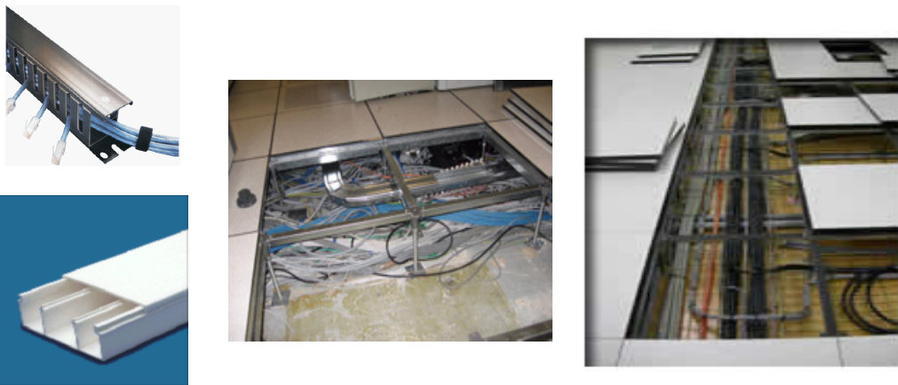
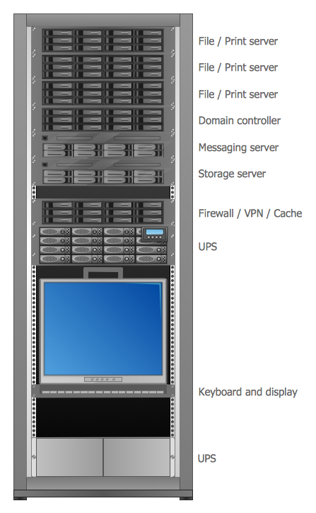
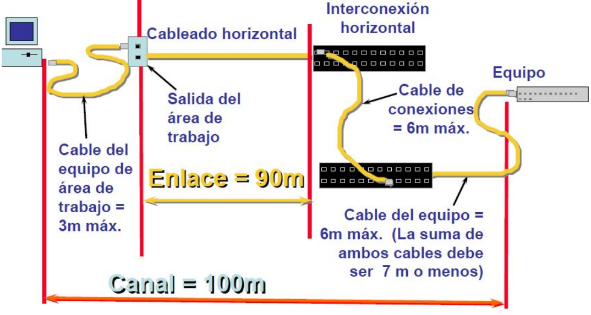

Created: 2025-03-06 Thu 18:44
El cableado estructurado es la técnica que permite
periféricos o equipos de una red con flexibilidad y sencillez.
Sistema colectivo de:
y demás dispositivos que deben ser instalados para establecer una infraestructura de telecomunicaciones genérica en un edificio o campus
Distribución de cables en un edificio que comprenda las necesidades de comunicación actuales y futuras.
Las normas más importantes a saber son:
Estándar ANSI/TIA/EIA-568-A de Cableado de Telecomunicaciones para Edificios Comerciales. El propósito de esta norma es permitir la planificación e instalación de cableado de edificios con muy poco conocimiento de los productos de telecomunicaciones que serán instalados con posterioridad.








Evitar el paso de los cables de datos a través o cerca de: